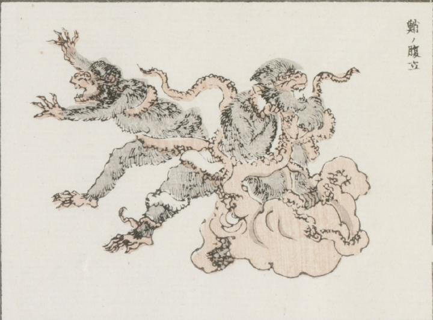

蛸；タコ，猿；サル

大きな蛸が2匹の猿に足を巻き付けて襲い掛かっている。1匹の猿は全身を絡められながらも蛸に掴みかかり、もう1匹は逃げようとしている。
著作者：牧墨僊／出典：親書誌：U426_nichibunken_0097：滑稽洒落狂画苑；コッケイシャレキョウガエン／日付：2007／資源識別子：U426_nichibunken_0097_0021_0000
Copyright (c)2010- International Research Center for Japanese Studies, Kyoto, Japan. All rights reserved.